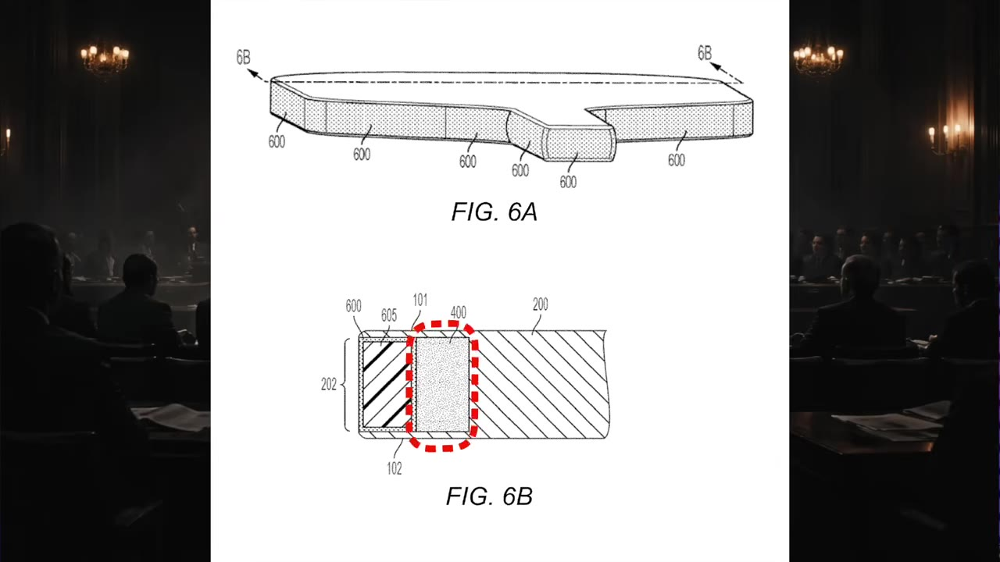
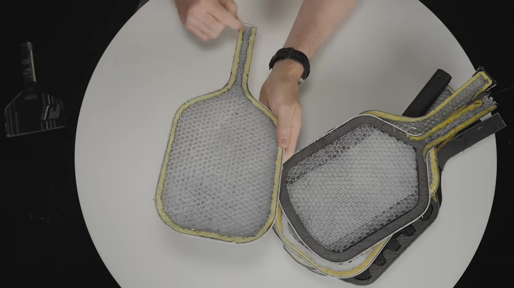
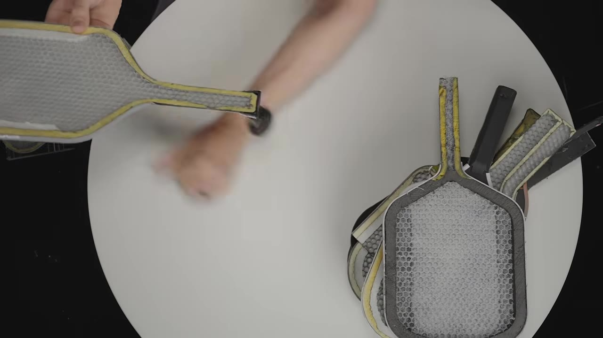
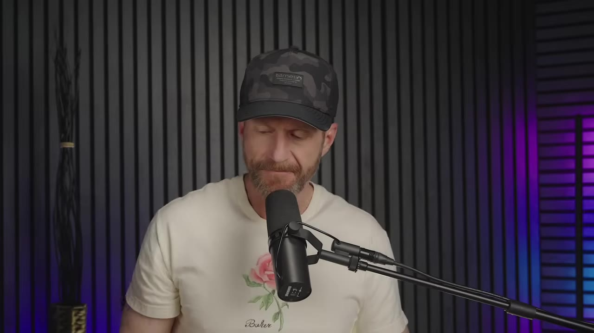
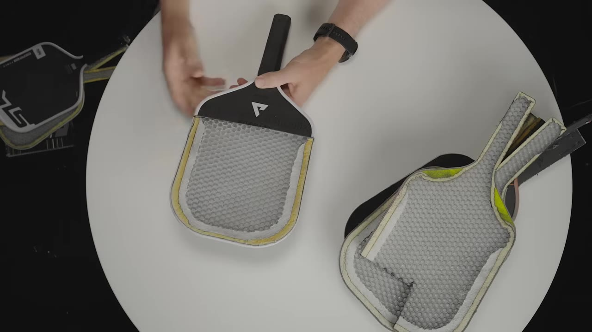
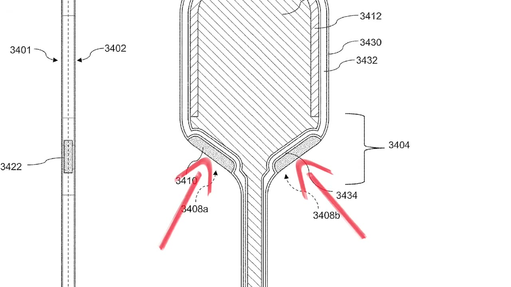

Yola's patents target a two-filler layered construction, not paddle shapes or Gen 3 labels
Patent '826 requires both an inner EVA foam filler AND an outer "sushi roll" frame
Gen 2 paddles lack the inner filler layer and likely don't infringe
Patent '891 protects the foam layering sequence used in the Yola Pro 4 line
Prior art — pre-existing paddle technology — could invalidate the patents entirely
01 · The real target
What the patents actually claim
All right, so everybody thinks this Yola lawsuit is about Gen 3 paddles, but the actual patents say something completely different. There's a specific construction detail that shows up in every accused paddle and almost nobody's talking about it.
Key insightA patent attorney's rule of thumb: "only focus on the claims, nothing else matters."
The lawsuit was filed under Section 337 of the ITC — meaning Yola is trying to block imports, not just collect damages. It targets 11 companies across the industry and two patents: '826 (layered construction) and '891 (core modification).
The speaker frames the case around a specific construction detail — not paddle shapes.00:00:20
02 · Patent '826
The layered structure
From the center of the paddle outward, patent '826 describes a very specific layered structure:
Core in the middle (honeycomb polypropylene, but could be anything)
First filler — a gap between the core and outer edge
Second filler — a hollow carbon fiber tube (the "sushi roll") filled with expanding foam or air

Cross-section of a paddle showing the honeycomb core, EVA foam band, and outer frame layers.00:01:20
Critical detailBoth filler layers are required. If a paddle has only one layer of filler extending to the edge, it doesn't match the patent claims.
03 · Show & Tell
Gen 1 → Gen 2
The speaker walks through paddle generations with dissected cross-sections:

Side-by-side Gen 2 paddle cross-section showing the honeycomb core and outer "sushi roll" frame.00:02:40
Gen 1 — Ben Johns Franklin signature: honeycomb polypropylene edge-to-edge. One slab, no foam, no fillers.
Gen 2 — Filthy thermoform: sandwich construction with honeycomb core + a carbon fiber tube filled with expanding edge foam (the "sushi roll"). One filler layer.
Why it mattersGen 2 has only one filler layer. Patent '826 requires two — so Gen 2 paddles may not infringe.
04 · Gen 3
The patented innovation
Yola's Gen 3 adds one critical component between the core and the sushi roll:

A paddle with the white horseshoe-shaped EVA foam layer between core and outer frame — the key Gen 3 innovation.00:03:20
A white horseshoe-shaped EVA foam insert sits between the core and the expanding edge foam. This is the first filler layer that Gen 2 lacks.
Everything is the same as the Gen 2... but there's one additional component here.— Speaker
Both filler layers present = matches patent '826. This is the crux of the case.
05 · Gen 3 variants
Same pattern, different brands
All Gen 3 paddles share the two-filler pattern:

Full lineup of Gen 3 paddles laid out — all share the same two-filler construction.00:04:20
Yola 3s prototype (Perseus Alpha) — the original patented Gen 3
Mach TA15 (now Selkirk) — same honeycomb core → EVA filler → sushi roll
Selkirk Era — the notable exception: single foam layer only, no sushi roll. Does not appear in the complaint.
06 · Gen 4 / Pro 4s
Foam order gets complicated

Pro 4 cross-section showing the honeycomb core, inner EVA filler, and outer sushi roll — plus foam inserts in the neck.00:05:20
Yola Pro 4s add a fourth foam type: bulbous inserts in the neck (TFP foam). The ordering of foam layers shifts:
Core (honeycomb polypropylene)
First filler (horseshoe EVA foam)
Second filler (expanding edge foam inside sushi roll)
Neck foam — the edge foam goes inside the neck foam, changing the sequence
This reordering is what patent '891 was designed to protect.
Full foam paddlesGen 4 "full foam" paddles (Honolulu NF, Carbon True Foam Genesis) use EPP center + EVA band — a different construction altogether. No second filler until the neck.
07 · Patent '891
Protecting the neck
Patent '891 is a completely different angle — it focuses on the internal structure of the core itself, not the core-to-edge construction.

Annotated patent diagram showing foam layering sequence in the neck region.00:08:26
Yola is using this patent to lock down the TFP foam inserts in the Pro 4 neck. The critical detail is the ordering: the expanding edge foam (sushi roll) must go inside — between the core and the neck foam — for the patent to apply.
08 · Prior art
The defense that could end it all
Even if Yola's patents are valid on paper, they can still be invalidated by the defendants if they can prove the technology already existed.
Prior art definitionAnything that was already known, used, published, or obvious based on existing technology can invalidate a patent.
This is what's called prior art — and if defendants can demonstrate that the two-filler layered construction predates Yola's patents, the entire case could collapse.
The prior art defense — the factor that could decide the entire case.00:09:20
Bottom lineIf prior art exists, these patents can't be enforced — regardless of what they say on paper.